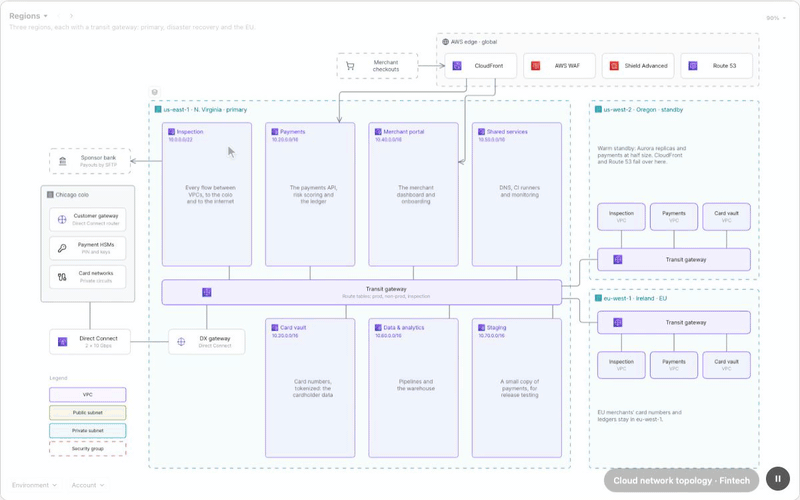
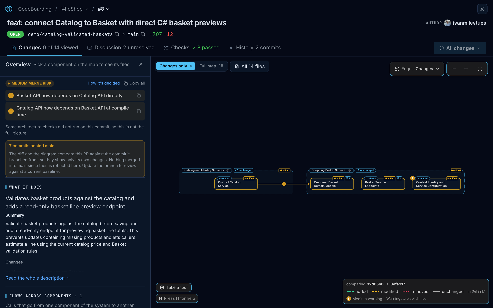

aisus
Final Report
Group 7
List each member's name and student number.
November 2026
Contents
Summary
In half a page, say what aisus is, what shipped, how many people use it and the main lesson. Write this part last.
1 The application
This is VS Code running the released aisus 0.3.4, open on real repositories with the maps and tours aisus drew of them. Nothing here is a mock-up. Click the aisus icon in the Activity Bar on the left, then Open. A click on any box opens the code it cites, and Tour walks through the map one stop at a time.
The code is read-only and no agent is connected. Generate, Refresh and Ask therefore stop at the setup checklist, as they would on a machine without Claude Code or Codex.
1.1 What aisus is
aisus turns a codebase into a picture a person can hold in their head. A developer sees the architecture of a repository as a powerful visual abstraction and can check every claim the picture makes against the code itself.
The developer's own coding agent draws the map, and aisus holds the agent to the truth. Every box must cite real lines inside the repository, or aisus sends the map back. When the code changes, aisus compares it with fingerprints stored in the map, on the developer’s own machine, and marks every part of the picture the code has left behind. The check costs no tokens, and aisus itself never sends code anywhere.
The map belongs to no single tool. It opens in VS Code, Cursor and IntelliJ IDEA, as a page in any browser, on pull requests through a GitHub Action and on the web at aisus.dev. Any coding agent can draw it. Claude Code, Codex and Devin run aisus's skills directly, and GitHub Copilot, Gemini CLI and OpenCode take a copied prompt. Even the rendering is open. Anyone can draw the map their own way (the diagrams are in JSON).
1.2 The symptom
Software is now written faster than anyone understands it, a gap well-known comprehension debt. On the best of days, its the existential crisis shared by millions of SWEs world wide. On the worst, comprehension debt rears its ugly head when it arrives as an outage, and the team pays it by learning the system under pressure.
Agents do not close the gap. An agent reads a few files at a time, then forgets about the system at the end of the session. It can explain one function well and still miss how two services depend on each other.
We can let Microsoft's recent outage explain that point for us.
November's Patch Tuesday fixed 1,094 vulnerabilities. Microsoft credited AI for the number. Two days later Exchange Online went down around the world for 23 hours and 50 minutes. Microsoft's preliminary report traces the outage to a change shipped in July. Under load, the change made gateway servers wait on each other's locks until they ran out of CPU and memory. The defect was worse on newer machines with more cores. Microsoft's load tests ran on weaker machines with fewer cores, and the defect passed them. A routine failover then moved Teams traffic onto the gateway that Exchange uses, while 14% of its servers were already down. More than 80% of the gateway stopped responding. The boundaries meant to hold a failure inside one region did not hold. The change was too old to roll back. Servers that came back up were flooded by waiting traffic and failed again.
Microsoft says AI did not cause the outage, and we do not claim it did directly. But consider that in the good ol' days, an engineer who knew the gateway inside out would have asked how a lock behaves on a machine with more cores. That engineer would have load tested on the machines that run in production. Even in top shops like Microsoft, that engineer doesn't exist anymore.
1.3 The vision
Programming stands at a precipice. Each generation of tools has carried people further from the machine. Assembly was too much, and we wrote C. C was too much, and we wrote Python. Code itself is now too much, and agents write it for us. Each step lets people build more while understanding less of what lies beneath.
What's next?
It might be AGI. That would be the end of everything anyway.
Or it might not. There is still a market in hedging for this future, where AI tooling has reached its efficiency ceiling and stabilises. The winner then becomes the one who predicts the next step after agents.
And it is the visual medium.
People understood the world by seeing it long before they read or wrote. Engineers still reach for a whiteboard when they need to explain a system. The chain of abstraction ends where it began, with the way humans meet the world. aisus is a step in that direction. It draws the system as a picture and ties every part of the picture to the code that proves it.
2 Similar applications and what makes aisus different
Three products are closest to aisus. Eraser is a diagramming canvas with AI, IcePanel is a modelling tool for architects, and CodeBoarding maps a repository from its code. They start from different places, but all three are moving towards the same idea, in which an agent reads the code and keeps an architecture diagram current.
2.1 Eraser

How it works. Eraser serves system architects. It draws diagrams from cloud accounts, code, configuration databases and spreadsheets. To map code, a team connects a GitHub, GitLab or Azure DevOps repository and prompts for a diagram, and Eraser scans the files on its own servers. Its Eraserbot watches chosen files and draws the diagram again when a pull request touches them.
Business model. Eraser sells seats, with AI usage metered in credits. The free plan has 3 files and 3 AI credits. Business costs $45 per member a month on an annual plan, with 100 credits and one connected repository. Every new AI drawing, including each Eraserbot update, spends credits, so revenue grows with both team size and AI use.
Traction. Eraser was founded in 2020. By May 2024 it had raised $6 million in venture funding, its AI had generated more than one million diagrams, and they reported tenfold growth since adding AI features. Its website shows Microsoft, Amazon, Visa, Gartner, KPMG and Kakao among its customers.
2.2 IcePanel

How it works. IcePanel serves software architects and engineering organisations, and also non-tech teams who need to understand a system. It is a collaborative tool for C4 models, which describe a system at the levels of context, container and component. People build the model by hand, and every diagram draws from that one model. Since October 2026 a model can also be drawn via a plugin for Claude Code and Copilot.
Business model. IcePanel charges per editor, and viewers are always free, so one paying architect can share the model with a whole organisation. The free plan has one editor and 100 objects. Growth costs $40 per editor a month with the MCP server support. Enterprise starts at 50 editors with single-tenant hosting. After Y Combinator the founders chose not to raise further capital, and the company grows on its revenue.
Traction. Two founders launched IcePanel in March 2021 and won their first paying customer, a Fortune 500 company, five months later. It joined Y Combinator's Winter 2023 batch, reached $2.4 million by July 2025. Its team has nine people. Its customer page lists Cisco, BMW, Alphabet and Shift4, among others.
2.3 CodeBoarding

How it works. CodeBoarding serves developers and code reviewers, and is the closest competitor to aisus. It draws interactive architecture maps of a codebase and reviews pull requests as changes to those maps. Its engine runs language servers to find symbols and call graphs in 9 languages, then asks a language model to name and describe the components.
Business model. CodeBoarding follows an open core model. The engine is open source under the MIT licence and free to use. Because users bring their own model key, CodeBoarding carries little of the model cost itself. Pro costs $9.99 a month and offers unmetered use, faster generation and health monitoring, and teams are sold through demos.
Traction. The engine's repository was created in April 2025. On 18 November 2026 it had 2,685 stars and 235 forks, and the VS Code extension had 1,900 installs. CodeBoarding also publishes many example maps of public repositories. Its company page lists a team of three.
2.4 What makes aisus different
Integrated viewing experience
Eraser and IcePanel are web platforms, and CodeBoarding's explore and review modes favour its web app. A diagram in a browser tab sits far from the code it describes. The developer switches windows to check what a box means, and loses their place in both. aisus opens the map in a panel beside the code, in VS Code, Cursor or any other platforms that the developers love.
Visualising plans with diagrams
It is unavoidable that every developers vibe code, they happily accept changes proposed in a long plans in pure text. When a plan grows long, it is hard to picture which parts of the system it touches and the unintended side-effects. aisus's plan skill turns a text spec into a change diagram base on the current system. The developer sees the reach and the risks of a change before any code is written, and can correct the plan while that is still cheap.
An index for agents
The map lists each part of the system with the files and lines that implement it. An agent that reads it first can go straight to the code a task touches, which saves exploration time and tokens on every task. aisus already writes the map into AGENTS.md and CLAUDE.md, the files coding agents read at the start of a session, and Ask answers questions from it. Because aisus knows which boxes are fresh, it can tell the agent which entries to trust. The competitors' MCP servers give agents a diagram or a model without that signal, implying that the diagrams and codebases need to be maintained independently.
2.5 Where aisus falls short
Grounding
CodeBoarding's relationships come from static analysis, which no language model can invent. aisus's come from an agent and are checked against evidence rules, and correct citations do not guarantee correct groupings. Pilot users raised map accuracy as a concern in Progress Report 2. This could be our future because having a benchmark will give more credibility with our tool.
Breadth
Eraser and IcePanel serve audiences and diagram types that aisus deliberately leaves out, such as presentation diagrams, business processes and future-state designs. We accept this shortfall because we want to focus on the developer experience which we have more domain knowledge in.
2.6 Threats
Convergence. The incumbents are adopting the idea of generating diagrams with the user's own agent. IcePanel's plugin of 22 October 2026 and Eraser's MCP server both show it. However, usually these geneartions have poor version control and changes might not be accurate, aisus could fill the gap here.
Agents' own indexes. Agent tools also build their own repository indexes and memory files. If those summaries become good enough, the agent half of the pitch weakens and the developer half has to carry it.
Sources
- Eraser: eraser.io, pricing, codebase diagrams, Eraserbot, customers, Business Insider, May 2024
- IcePanel: icepanel.io, pricing, customers, IcePanel's journey to $2 mil, Y Combinator profile, IcePanel plugin
- CodeBoarding: codeboarding.org, engine repository, GitHub Action, VS Code extension, company page
3 Milestones and timeline
3.1 Planned and actual timeline
3.2 Milestones hit and missed
The planned dates were read from the Progress Report 2 chart. Check each one against the source schedule, then fill in the actual date, a status of hit, late, missed or dropped, and a note.
| Milestone | Type | Planned | Actual | Status | Note |
|---|---|---|---|---|---|
| Progress Report 1 | Milestone | Oct 11 | |||
| Ask and Learning Session feature | Task | Oct 12 to Oct 18 | |||
| Landing page and v0.3.0 | Task | Oct 12 to Oct 18 | |||
| Refresh and staleness feature | Task | Oct 12 to Oct 18 | |||
| Demo video | Task | Oct 19 to Oct 23 | |||
| Developer outreach | Task | Oct 19 to Nov 5 | |||
| IntelliJ IDEA plugin | Task | Oct 22 to Nov 11 | |||
| Reduce LLM credits | Task | Oct 22 to Nov 2 | |||
| Progress Report 2 | Milestone | Oct 25 | |||
| Security scan | Task | Oct 26 to Nov 2 | |||
| Poster design | Task | Oct 26 to Nov 9 | |||
| Class demo | Milestone | Nov 2 | |||
| Pilot fixes | Task | Nov 3 to Nov 10 | |||
| Poster session | Milestone | Nov 12 | |||
| Final report | Milestone | Nov 18 |
3.3 Why milestones moved
Explain each late, missed or dropped milestone and what the team changed in response.
4 Contributions and acknowledgements
4.1 Roles
Give one row per member.
| Member | Role | Main areas | Key deliverables |
|---|---|---|---|
4.2 Individual contributions
Describe each member's work in a short paragraph. Commit counts or areas owned can support it.
4.3 Acknowledgements
People
Thank the pilot users, testers, teaching staff and anyone else who gave feedback or help.
Tools, services and libraries
List the external tools, services and open source libraries the project relied on.
5 Application design
Use diagrams and prose only. This section contains no code.
5.1 System context
5.2 Components
Show the modules and the contracts between them. docs/architecture.md is the source.
5.3 Data model
The map format
The cloud database
5.4 Key flows
5.5 Deployment
Describe the single server, what runs on the developer's machine, and which data leaves it.
5.6 Key design decisions
Summarise the decisions recorded in docs/adr/.
| Decision | Reason | Record |
|---|---|---|
6 Users and analytics
6.1 What we measure
The extension sends no telemetry by design. Explain which sources the numbers come from instead, such as site analytics, store install counts and cloud accounts.
6.2 Current numbers
| Metric | Value | Source | Date |
|---|---|---|---|
| Site visitors | |||
| Downloads and installs | |||
| Cloud sign-ups | |||
| Active users | |||
| Maps created | |||
| Pilot users |
6.3 Analytics evidence
6.4 User feedback
Summarise feedback from pilot users and the class demo, with quotes where you have them.
6.5 What the numbers show
Compare the numbers with the targets and explain the gap.
7 Future plans and strategies
7.1 Product
Cover the Marketplace launch, onboarding, map accuracy and IntelliJ performance.
7.2 Validation
Describe how to measure whether agents that read the map first use fewer tokens, and how to run user studies on task time and understanding.
7.3 Growth and distribution
Cover the community channel, public showcase maps and the choice of licence.
7.4 Business
Cover pricing, running costs and the path to paying teams.
8 What we learned
8.1 Technical
Describe what building the extension, agent skills, cloud and IntelliJ plugin taught the team.
8.2 Product and market
Describe what the team learned about getting a developer tool discovered and installed, and about what users valued.
8.3 Teamwork and process
Describe how the team planned, split work and handed over between shifts.
8.4 What we would do differently
Appendices
A Full Gantt charts
B Additional screenshots
C User survey or interview script
Include this appendix only if the team used a survey or interview script.